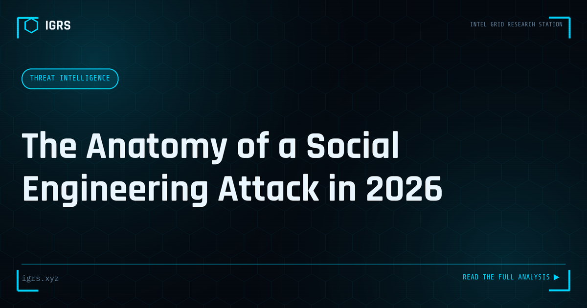

The Anatomy of a Social Engineering Attack in 2026
| File No. | IGRS-022/2026 |
| Subject | How modern social engineering attacks are constructed and executed — with India-specific patterns |
| Category | Cyber Awareness |
| Author | Manuj Kumar Pandey |
| Published | 2026-04-26 |
| Reading time | 12 minutes |
Social engineering has evolved far beyond phishing emails. Understanding how today's attacks are constructed is the first step to defeating them.
Social Engineering: Hacking the Human
While much of cybersecurity focuses on technical defences, the most reliable way into a system is often the people who use it. Social engineering — manipulating people into revealing information or taking harmful actions — exploits human psychology rather than technical vulnerabilities. It is the foundation of phishing, fraud, and many major breaches. Understanding its anatomy is essential to defending against it. This guide dissects how social engineering works.
Why Social Engineering Works
Social engineering succeeds because it exploits fundamental human tendencies — the instinct to trust, to obey authority, to help others, to fear consequences, and to act quickly under pressure. These traits, normally positive, become vulnerabilities when manipulated. No amount of technical security fully protects against a person who is tricked into voluntarily handing over access or information.
The Psychological Levers
| Lever | How It's Exploited |
|---|---|
| Authority | Impersonating bosses, police, officials |
| Urgency | Creating time pressure to bypass judgement |
| Fear | Threatening consequences to force compliance |
| Trust | Building rapport before exploiting it |
| Reciprocity | Doing a favour to create obligation |
| Social proof | Claiming others have complied |
Common Social Engineering Techniques
Social engineering takes many forms:
- Phishing — deceptive emails harvesting credentials or delivering malware
- Vishing — voice calls impersonating trusted entities
- Smishing — SMS-based deception
- Pretexting — inventing a scenario to extract information
- Baiting — offering something enticing to trigger action
- Tailgating — physically following someone into a secure area
The Stages of a Social Engineering Attack
Sophisticated social engineering follows a structured progression: information gathering (researching the target through OSINT), establishing rapport or a pretext (building trust or a believable scenario), exploitation (the actual manipulation to extract value), and exit (withdrawing without raising suspicion). The research phase is often extensive — attackers gather details that make their approach convincing and personalised.
The India Context: Vishing and Digital Arrest
In India, social engineering powers some of the most damaging frauds. Vishing calls impersonating banks extract OTPs and credentials. The digital arrest scam combines authority (fake police), fear (false criminal accusations), urgency, and isolation to devastating effect. UPI frauds manipulate victims into authorising transactions. Recognising these as social engineering — attacks on judgement rather than technology — is key to defending against them.
OSINT and Social Engineering
Modern social engineering is powered by OSINT. Attackers gather targets' personal details, job information, relationships, and habits from social media and public sources, then use this to craft convincing, personalised approaches. The more an attacker knows, the more believable their pretext. This connection means personal information shared publicly becomes ammunition for social engineering — a reason for individuals, especially those in sensitive roles, to limit their digital footprint.
Recognising Social Engineering
Defence begins with recognition. Warning signs include unsolicited contact creating urgency, requests for sensitive information or credentials, pressure to bypass normal procedures, appeals to authority or fear, and anything that discourages verification. The instinct to pause, question, and verify — especially when pressured to act quickly — is the single most effective defence against social engineering.
Defending Against Social Engineering
Organisations and individuals defend through layered measures:
- Security awareness training that teaches recognition
- Verification procedures for sensitive requests (out-of-band confirmation)
- A culture where questioning unusual requests is encouraged
- Healthy scepticism of urgency and authority
- Limiting publicly available personal information
- Simulated phishing to build resilience
The Verification Principle
The most powerful defensive habit is independent verification. When a request arrives — however urgent or authoritative it appears — verify it through a separate, trusted channel before acting. A call claiming to be from your bank? Hang up and call the official number. An email from your CEO demanding an urgent transfer? Confirm in person or by phone. This simple discipline defeats the time pressure that social engineering depends on.
Building a Human Firewall
Ultimately, defending against social engineering means turning people from the weakest link into a strong defence — a human firewall. This requires ongoing awareness, a questioning mindset, clear verification procedures, and a culture that supports caution over blind compliance. For Indian individuals and organisations facing a relentless wave of vishing, phishing, and fraud, understanding the anatomy of social engineering and building these defensive habits is among the most important security investments, because the human element is both the most targeted and, when properly prepared, the most capable line of defence.